Journal v2 J4-J6: My proof, plans, delivery
Evidence to re-read before the open. His own plans and goals. The journal sent where he chooses.
| Item | Before | After |
|---|---|---|
| J6 Page | opens on Trades; Trades · Stats · Reviews · Settings | opens on Today; Today · Trades · Reviews · My proof · Plans · Stats · Settings; page tour |
| J4 My proof | - | stop kept, process win on a loss, waited for the setup, calm after a loss, exit as planned, streaks, a dip recovered; date + trade; his own entries; pin |
| J4 Today page / after a loss | - | "Your last good decision"; "In your last 20 trades you followed your plan in N" |
| J5 If-then plans | - | his words; shown before the open; back after a stop hit / loss if he chose; never blocks |
| J5 Process goals | - | plan followed / stop kept / checked in; his %; counts until 20 trades |
| J6 Telegram / e-mail | - | daily / weekly / monthly + check-in reminders; his times; all OFF by default; no feelings in a message |
1440 light
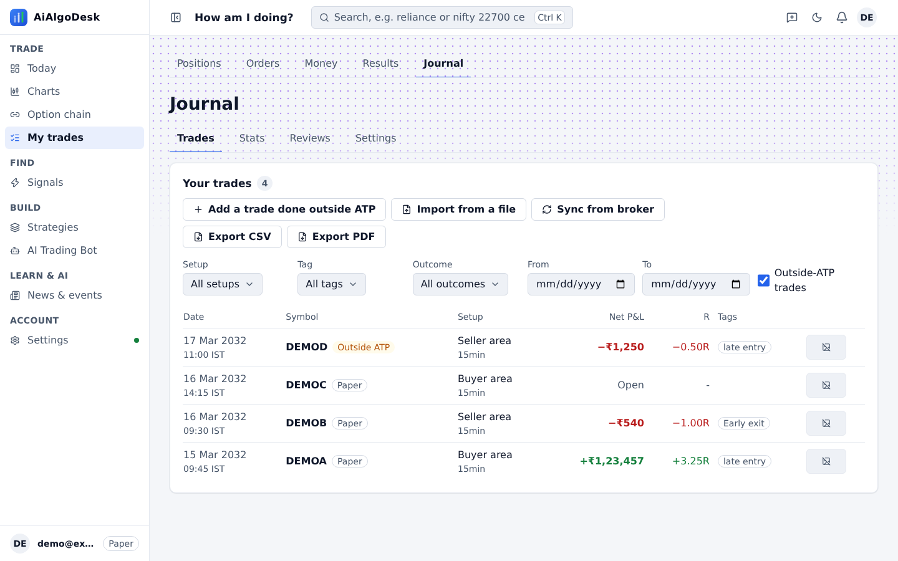
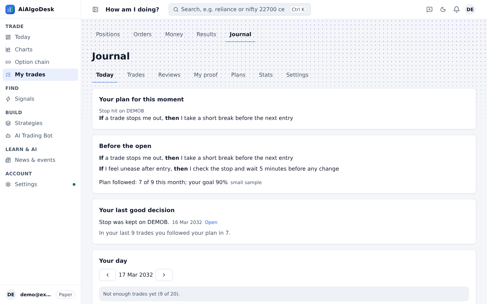
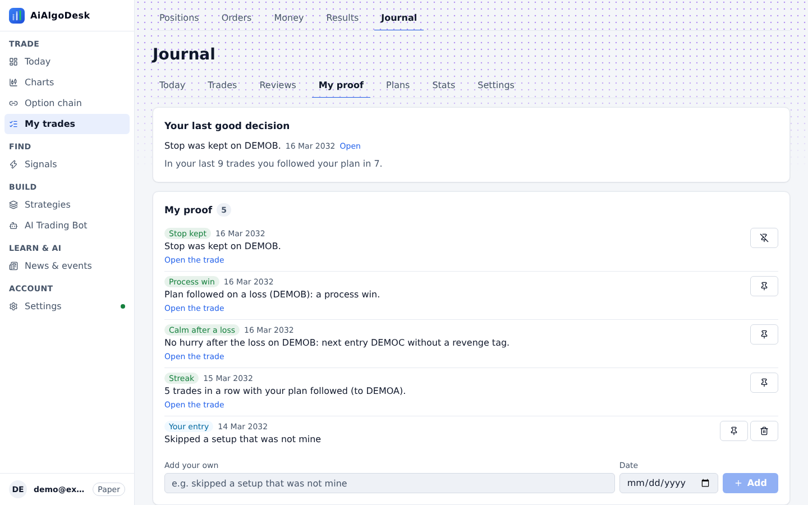
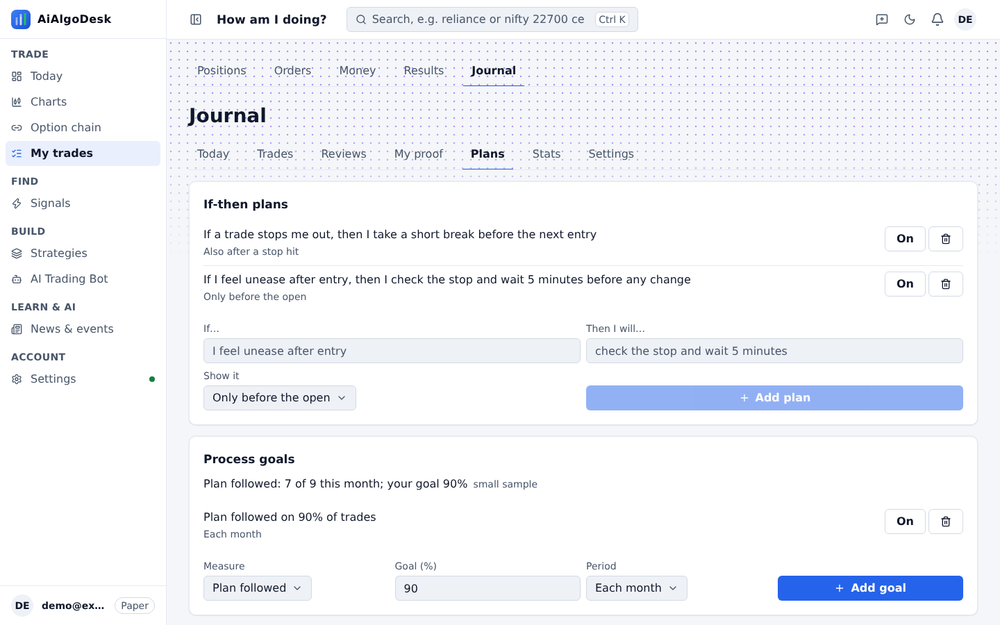
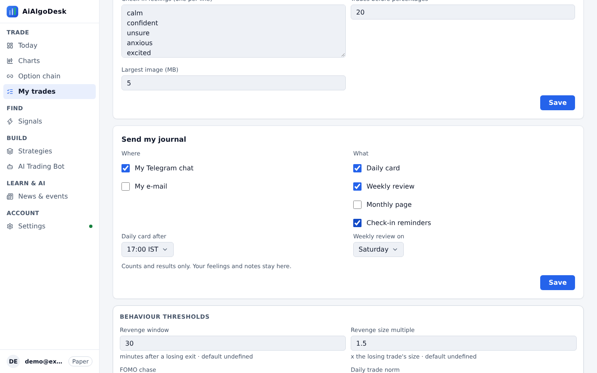
1440 dark
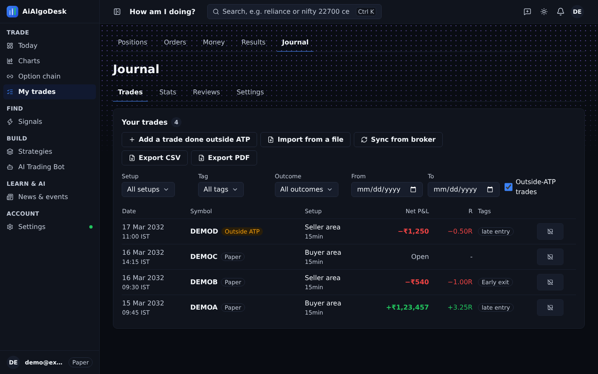
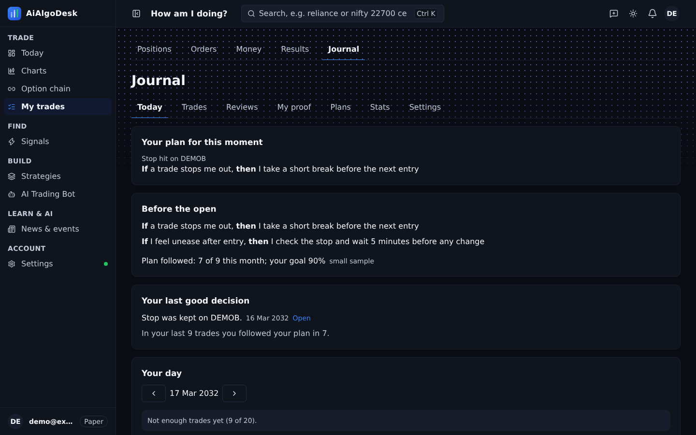
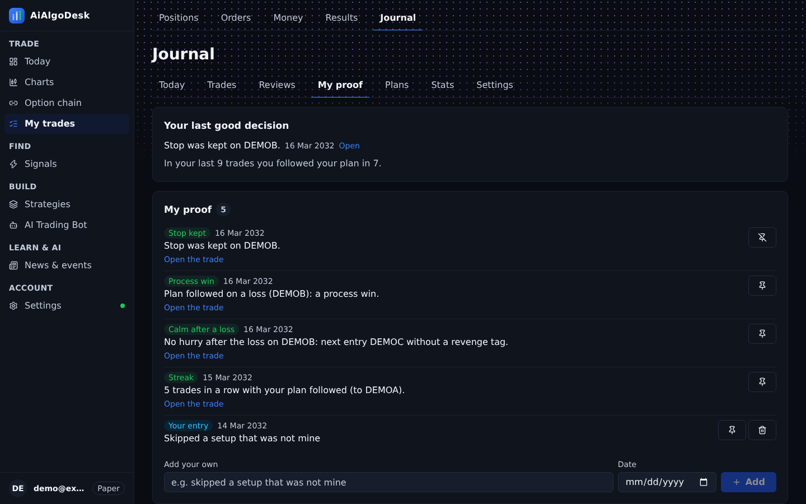
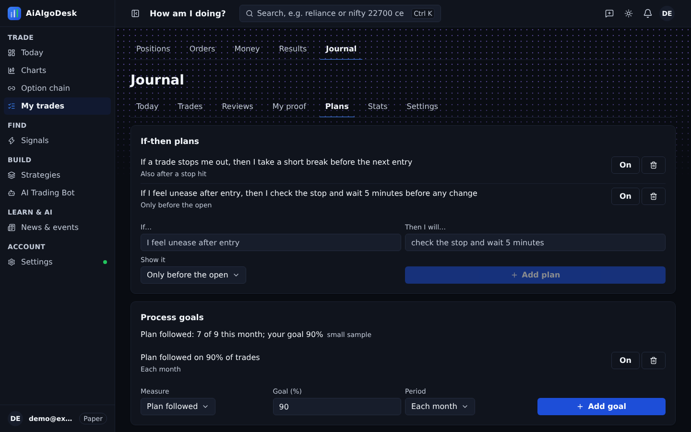
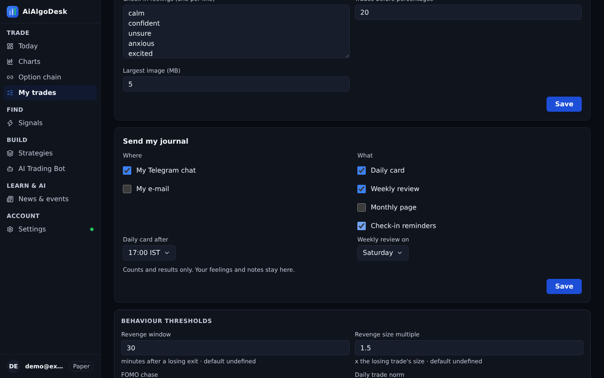
390 light
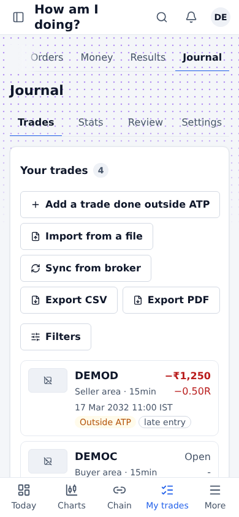
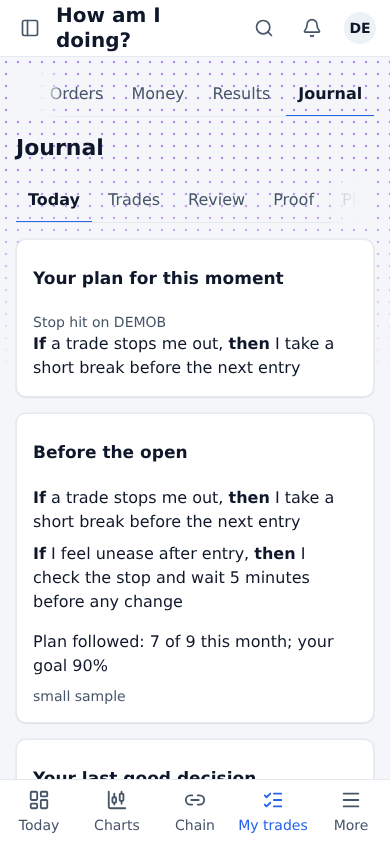
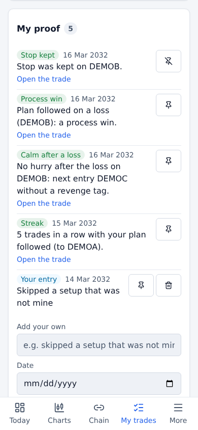
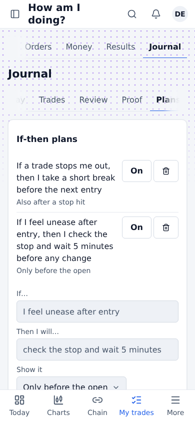
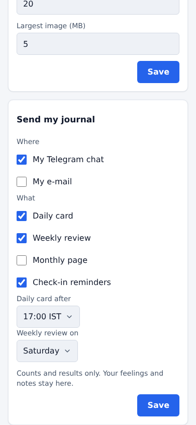
390 dark
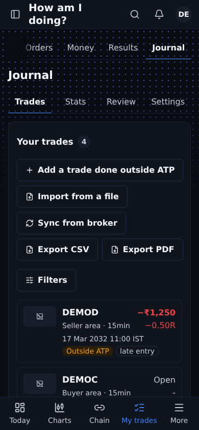
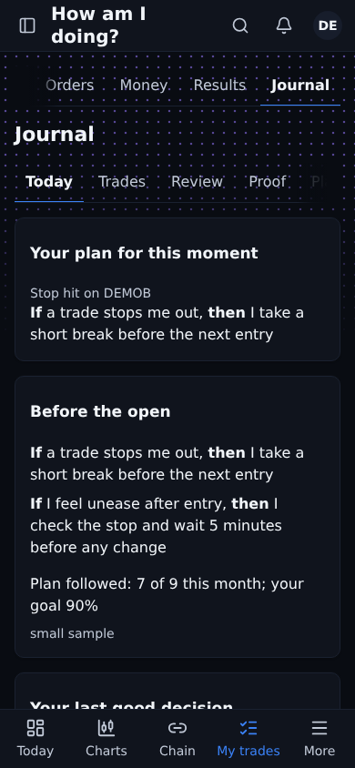
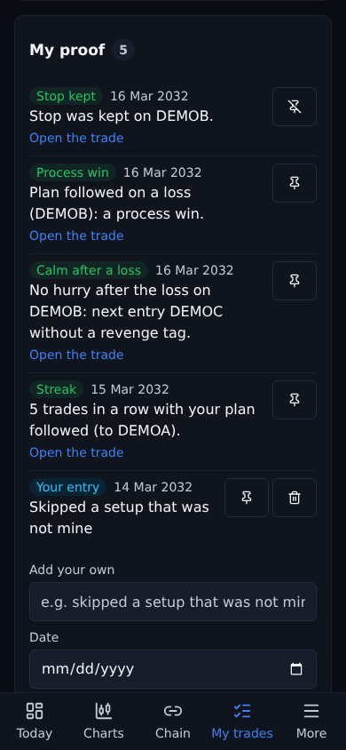
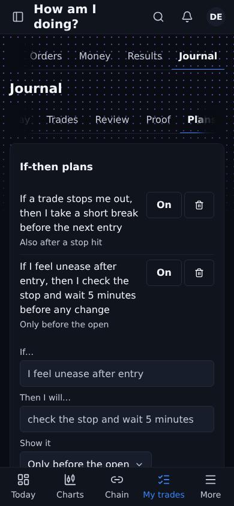
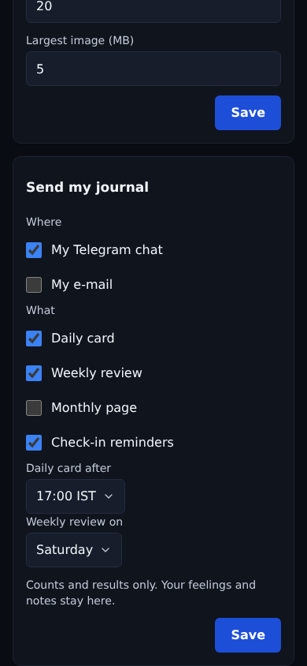
Made-up data only. No sideways scroll at 390 (asserted in the spec).